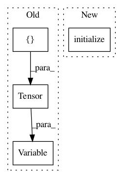

b61a525baee25d2ea31ab088540dd4d2ffed2251,test/kernels/rbf_kernel_test.py,,test_computes_radial_basis_function_gradient,#,23
Before Change
actual_output.backward(torch.eye(3))
actual_param_grad = param.grad.data.sum()
log_lengthscale = Variable(torch.Tensor([math.log(lengthscale)]), requires_grad=True)
output = kernel(Variable(a), Variable(b), log_lengthscale=log_lengthscale)
output.backward(gradient=torch.eye(3))
res = log_lengthscale.grad.data
assert(torch.norm(res - actual_param_grad) < 1e-5)
After Change
b = torch.Tensor([0, 2, 2]).view(3, 1)
lengthscale = 2
kernel = RBFKernel().initialize(log_lengthscale=math.log(lengthscale))
param = Variable(torch.Tensor(3, 3).fill_(math.log(lengthscale)), requires_grad=True)
diffs = Variable(a.expand(3, 3) - b.expand(3, 3).transpose(0, 1))
actual_output = (-(diffs ** 2) / param.exp()).exp()
actual_output.backward(torch.eye(3))
In pattern: SUPERPATTERN
Frequency: 4
Non-data size: 4
Instances
Project Name: cornellius-gp/gpytorch
Commit Name: b61a525baee25d2ea31ab088540dd4d2ffed2251
Time: 2017-08-15
Author: gpleiss@gmail.com
File Name: test/kernels/rbf_kernel_test.py
Class Name:
Method Name: test_computes_radial_basis_function_gradient
Project Name: cornellius-gp/gpytorch
Commit Name: b61a525baee25d2ea31ab088540dd4d2ffed2251
Time: 2017-08-15
Author: gpleiss@gmail.com
File Name: test/kernels/rbf_kernel_test.py
Class Name:
Method Name: test_computes_radial_basis_function
Project Name: cornellius-gp/gpytorch
Commit Name: b61a525baee25d2ea31ab088540dd4d2ffed2251
Time: 2017-08-15
Author: gpleiss@gmail.com
File Name: test/math/functions/lazy_toeplitz/interpolated_toeplitz_gp_marginal_log_likelihood_test.py
Class Name:
Method Name: test_toeplitz_gp_marginal_log_likelihood_backward
Project Name: cornellius-gp/gpytorch
Commit Name: b61a525baee25d2ea31ab088540dd4d2ffed2251
Time: 2017-08-15
Author: gpleiss@gmail.com
File Name: test/math/functions/lazy_toeplitz/interpolated_toeplitz_gp_marginal_log_likelihood_test.py
Class Name:
Method Name: test_toeplitz_gp_marginal_log_likelihood_forward